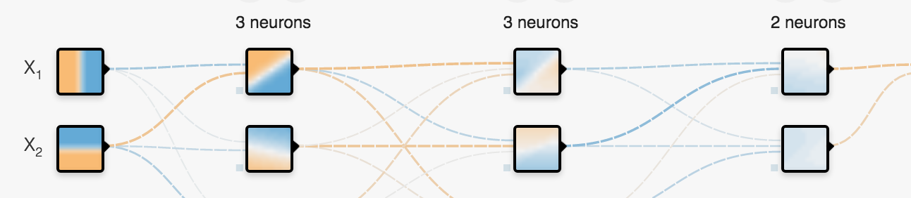

Machine Learning in the Browser with Deep Neural Networks
data2day 2016
Oliver Zeigermann / @DJCordhose
http://djcordhose.github.io/machine-learning-in-the-browser/2016_data2day.html


- Talk focus now not on introduction, but on Browser and JavaScript - Take all convnet-Slides from rmjs (including Regression and ConvNet) - Eval other libs and add some content
Why JavaScript for Machine Learning?
- Python and R are predominant
- Have a large and mature set of libs
- Are reasonably fast
- Using binding to C/C++ or Fortran
- JavaScript has benefits, though
- might be the language you are most comfortable with
- might be the only language around (because all you have is a browser)
- zero installation, easy to get started
- combination with interactive visualizations
Visualizing the Basics
The perceptron - where it all begins
- mathematical model of a biological neuron
- creates a single output based on sum of many weighted inputs
- uses a sigmoid activation function to create boolean like output
Implementing it in pure JavaScript
// Initial weights
let w0 = 3, w1 = -4, w2 = 2;
function perceptron(x1, x2) {
const sum = w0 + w1 * x1 + w2 * x2;
return sigmoid(sum);
}
function sigmoid(z) {
return 1 / (1 + Math.exp(z * -1));
}

Right, that is surprisingly simple
Code for training is a little bit more complex (but only a little bit)
Visualizing what a neuron can do
- output separates plane into two regions using a line
- such regions are called linearly separable
- can emulate most logic functions (NOT, AND, OR, NAND)
- can be trained by adjusting weights of inputs based on error in output

percepton training visualization (initial version provided as a courtesy of Jed Borovik)
A single neuron is not very powerful
but becomes much more powerful when organized in layers
Feedforward Neural Networks
- neurons can be arranged in layers
- data flows forward in one direction, there are no cycles
- first layers takes inputs
- output layer (typically softmax) classifies summed up output
- middle layer(s) called hidden layer(s)
- more than one hidden layer is possible (deep neural network)
- each neuron in each hidden layer gets exactly the same input
- no connection between neurons in same layer
- each neuron in one layer feeds all neurons in the next layer

A Classification example
Using the Tensorflow Playground
- result of the neural network is a classification
- each spot in a plane gets a prediction
- either blue or orange
- prediction can be discrete or continuous
- network is trained to give a good prediction


Training and Loss
- data is separated into training and test data
- in image below: training: white border, test: black border
- training data is used to train neural network
- both test and training data are used to check accuracy of prediction
- loss is to be minimized
- overfitting: training loss low, test loss much higher (to be avoided)

Tensorflow Internal
- Written ins TypeScript
- Visualizations dones with D3.js
- Everything implemented from scratch, no performance optimizations
- NN simulation fairly similar to code from scratch as shown before
JavaScript Libraries for Deep Neural Networks
-
Brain.js
- Synaptic.js
- small general lib for Neural Network
- nice and simple API
- ConvNetJS
- mainly Deep Neural Network
- comes with visualizations, great for education
- Natural
Thank you!
Questions / Discussion
Oliver Zeigermann / @DJCordhose
http://djcordhose.github.io/machine-learning-in-the-browser/2016_data2day.html
Resources
- Tensorflow Playground in the Browser
- Essentials of Machine Learning Algorithms (with Python and R Codes)
- A visual introduction to machine learning
- Udacity 3 minute introduction to Neural Networks and Convolutional Networks
- Theoretical Motivations for Deep Learning
- Deep Learning for Robots
- Getting dirty with the math of Deep Learning
- Tensorflow: Google's Machine Learning Library
- Baidu Chief Scientist: Deep Learning changes the world
- Everything You Know About Artificial Intelligence is Wrong
- k-Nearest Neighbors from Scratch in JavaScript